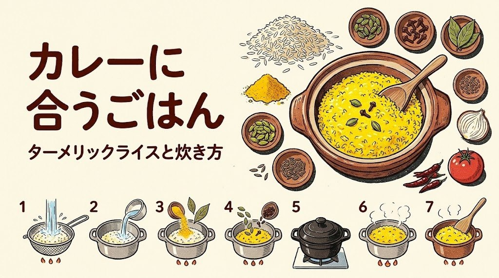

スパイスカレーに合うごはんの炊き方｜ターメリックライスとバスマティライス、日本米の固めの炊き方まで

スパイスカレーを作ったとき、「ルウのカレーと同じごはんでいいのかな」と思ったことはありませんか。
スパイスカレーは、ルウのカレーより水分が多くさらっとしていることが多いので、ごはんも少し固めで、粒がはっきりしているほうが合います。日本米なら水を気持ち少なめに、慣れてきたらターメリックライスやバスマティライスに広げていくのがおすすめです。
この記事では、日本米の炊き方の調整から、ターメリックライスの材料表と手順、バスマティライスの茹で方まで、カレーに合わせて選べるように紹介します。
スパイスカレーに合うごはんの考え方
ごはんの選び方は、カレーのとろみと油の量で考えると分かりやすいです。
| カレーの質感 | 合うごはん | 理由 |
|---|---|---|
| さらっとした汁気の多いカレー（ダル、南インド風など） | バスマティライス、固めの日本米 | 粒がばらけて、汁をよく吸う |
| 少しとろみのあるカレー（基本のチキンカレーなど） | 固めの日本米、ターメリックライス | 粒立ちと、黄色の見た目で満足感が上がる |
| 油を多めに使った濃いカレー（キーマなど） | 日本米、ジャスミンライス | もちっとした食感が油を受け止める |
まずは、いつもの日本米を「少し固め」に炊くだけで十分です。ここから紹介する炊き方は、どれも特別な道具を使いません。
日本米を「少し固め」に炊くコツ
日本米は、ふだんの炊き方のままだと、さらっとしたスパイスカレーには少しやわらかく感じることがあります。次の3つを試してみてください。
- 米を研いだあと、水の量を炊飯器の目盛りより1割ほど少なくする（2合なら、目盛りから大さじ2〜3くらい減らす目安です）
- 浸水の時間を短めにする（夏は20分、冬は30分くらい）。長く浸けるほど、やわらかく炊き上がります
- 炊き上がったら、すぐにしゃもじで底から返して、余分な水分を飛ばす
無洗米や新米は、水の量の加減が変わります。1回目は1割減で炊いて、好みに合わせて次回から調整してみてください。固めに炊いたごはんは、基本のチキンカレーのようなとろみのあるカレーにも、さらっとしたカレーにもよく合います。
ターメリックライス（2〜3人分）の材料と手順
カレー屋さんで見かける黄色いごはんです。ターメリックは色づけと香りづけの役目で、量はごく少しで十分です。入れすぎると苦みが出るので、小さじ1/4から始めてください。
材料（2〜3人分）
| 材料 | 分量 |
|---|---|
| 米 | 2合（300g） |
| 水 | 炊飯器の2合の目盛りより1割ほど少なめ |
| ターメリック（パウダー） | 小さじ1/4 |
| 塩 | ひとつまみ（小さじ1/4くらい） |
| バターまたはサラダ油 | 小さじ1 |
| ローリエ（あれば） | 1枚 |
手順
- 米をふだんどおりに研ぎ、ざるにあげて水気を切る
- 炊飯器の内釜に米を入れ、2合の目盛りより1割ほど少なめに水を入れる
- ターメリックと塩を加え、しゃもじで全体を軽く混ぜて色を均一にする
- バター（または油）とローリエをのせて、ふだんの白米モードで炊く
- 炊き上がったら、ローリエを取り出し、底から返してほぐす。黄色がまだらなら、ここで混ぜると均一になる
ターメリックは衣類や木のしゃもじに色が移りやすいので、混ぜるときはプラスチックのしゃもじを使い、こぼしたらすぐに拭き取ってください。ターメリックそのものの扱いはターメリックの使い方にまとめています。
バスマティライス（2〜3人分）の茹で方
バスマティライスは、インドやパキスタンで食べられている細長い米で、炊くと粒が長く伸び、ぱらっとして香りがあります。日本米とは水加減の考え方が違い、「たっぷりの湯で茹でて、湯を捨てる」方法（湯取り法）が失敗しにくいです。
材料（2〜3人分）
| 材料 | 分量 |
|---|---|
| バスマティライス | 300g（約2カップ） |
| 水（茹でる用） | 1.5リットル以上 |
| 塩 | 小さじ1 |
| バターまたは油（好みで） | 小さじ1 |
手順
- 米をボウルに入れ、水を替えながら2〜3回やさしく洗う。粒が折れやすいので、強くこすらない
- たっぷりの水に20〜30分浸けてから、ざるにあげて水を切る
- 大きめの鍋に水1.5リットル以上と塩を入れて沸かす
- 沸騰したら米を入れ、くっつかないように一度だけ混ぜて、中火で6〜8分茹でる。1粒食べてみて、芯がわずかに残るくらいで火を止める
- 素早くざるにあげて湯を切り、鍋に戻してふたをし、弱火で1〜2分、そのあと火を止めて5分ほど蒸らす
- ふたを開けて、バターや油を好みで加え、フォークやしゃもじでやさしくほぐす
茹で時間は銘柄と浸水の時間で変わります。1回目は短めの時間で味見をして、次回から調整してください。粒が細長くぱらっとしたごはんは、ダルカレーのような汁気の多いカレーと相性がよいです。
ジャスミンライスとの違い、雑穀を混ぜるとき
スーパーで見かける「ジャスミンライス（タイ米）」は、バスマティライスと同じく細長い米ですが、香りが甘く、炊くと少しもちっとします。日本の炊飯器で、米と同量か少し少なめの水で炊けることが多く、浸水はほとんどいりません。油を多めに使ったカレーや、ココナッツミルクを使うカレーと合わせると、香りがよく合います。
日本米に雑穀や押し麦を混ぜる方法も、スパイスカレーには合います。押し麦を米の1〜2割ほど混ぜると、粒の歯ごたえが出て、汁気の多いカレーでもべたつきにくくなります。雑穀のパックは、袋に書かれた水加減の指示に合わせてください。
副菜との組み合わせはスパイスカレーの付け合わせにまとめています。ごはんが決まると、献立全体が組み立てやすくなります。
炊いたごはんの安全な保存
カレーの日は、ごはんを多めに炊くことが多いと思います。保存のしかたで、味も安全さも変わります。
- 炊いたごはんを炊飯器の保温や常温に長く置かず、食べない分は温かいうちに1食分ずつラップや保存容器に包む
- 粗熱が取れたら、できるだけ早く（2時間以内を目安に）冷蔵か冷凍に入れる。冷凍のほうが、味が落ちにくい
- 冷蔵は翌日までを目安に、冷凍は1か月程度を目安に食べきる
- 食べるときは、中心までしっかり熱くなるまで加熱する
- ターメリックライスやバターを使ったごはんも、保存の考え方は同じ。油が入っている分、再加熱で香りがもどりやすい
カレーそのものの作り置きと冷凍は、スパイスカレーの作り置きと冷凍にまとめました。ごはんとカレーを別々に冷凍しておくと、平日の夜でも10分でスパイスカレーの夕食ができます。
まとめ
- スパイスカレーには、少し固めで粒のはっきりしたごはんが合う。まずは日本米の水を1割減らすだけで十分
- ターメリックライスは、2合にターメリック小さじ1/4と塩ひとつまみ、バター少しで炊飯器のまま炊ける
- バスマティライスは、たっぷりの湯で6〜8分茹でて湯を切り、蒸らす「湯取り法」が失敗しにくい
- ジャスミンライスは香りが甘く、油やココナッツを使うカレーと合う。押し麦を混ぜる方法も合う
- 炊いたごはんは常温に置かず、2時間以内を目安に冷蔵か冷凍し、しっかり再加熱して食べる
次にスパイスカレーを作る日は、いつもの米の水を1割だけ減らしてみませんか。それだけでカレーとごはんのなじみ方が変わります。あなたは、黄色いターメリックライスと細長いバスマティライス、どちらから試してみたいですか。
まずは、家にあるスパイスを確かめるところから。クミン・コリアンダー・ターメリックの3つがそろえば、次の休みに最初の1皿に挑戦できます。
あなたなら、どのカレーから作ってみますか？
最後まで読んでくださり、ありがとうございました。